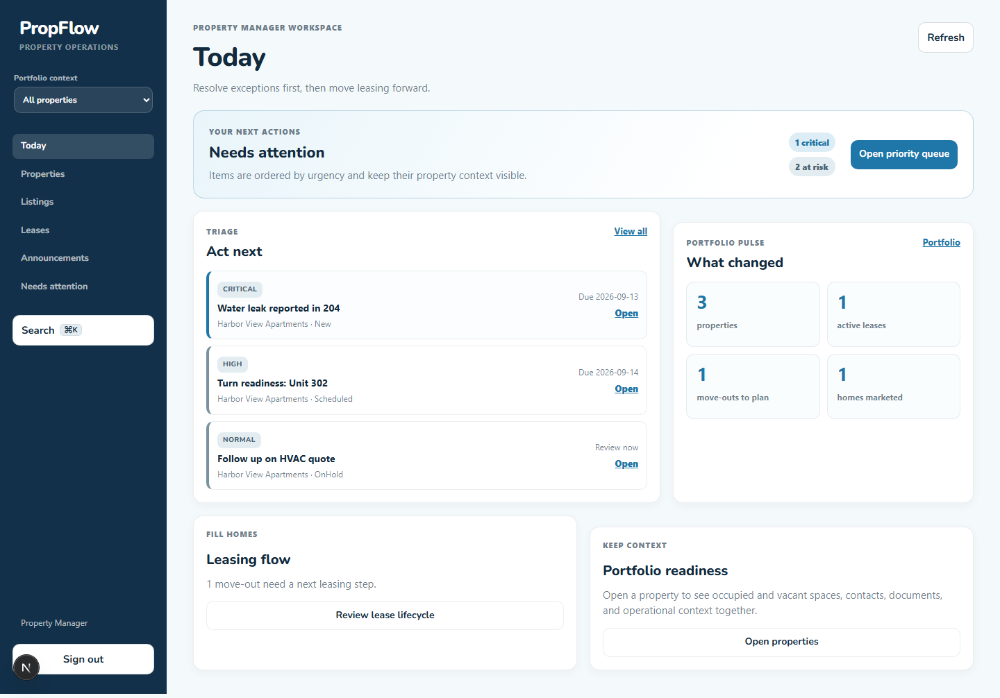
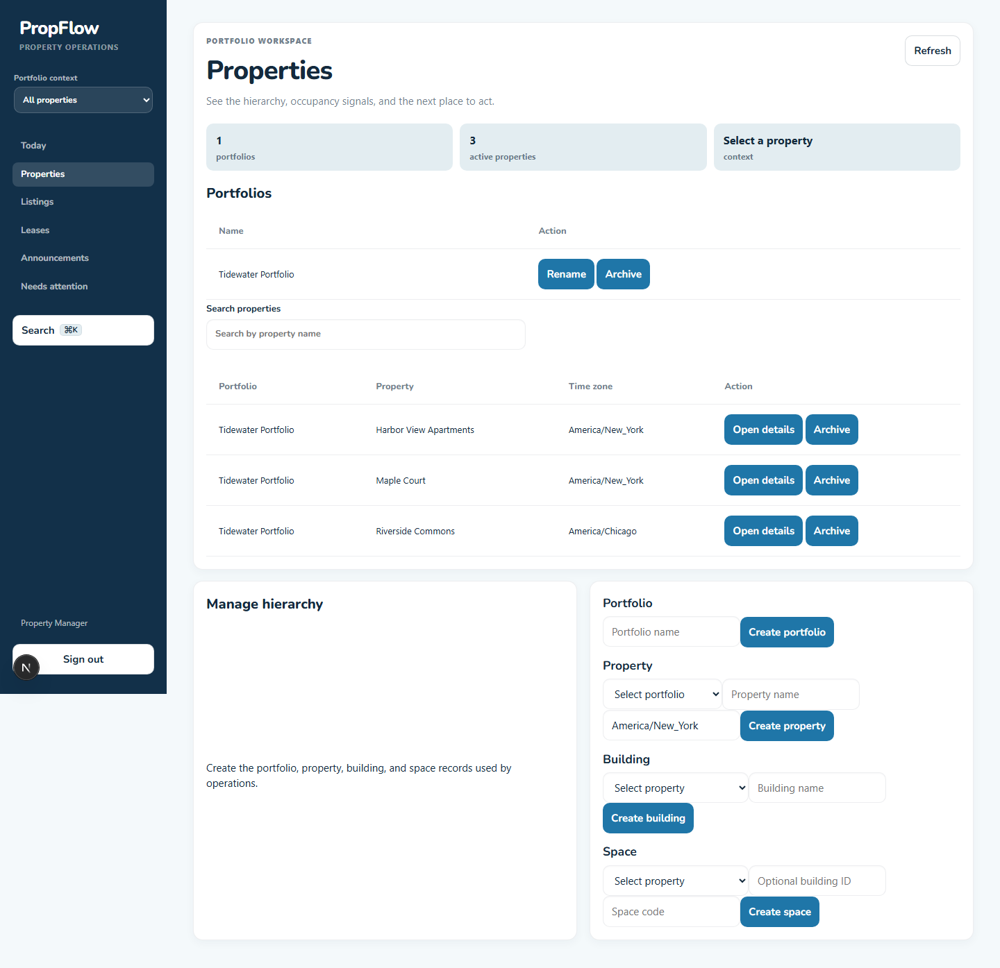
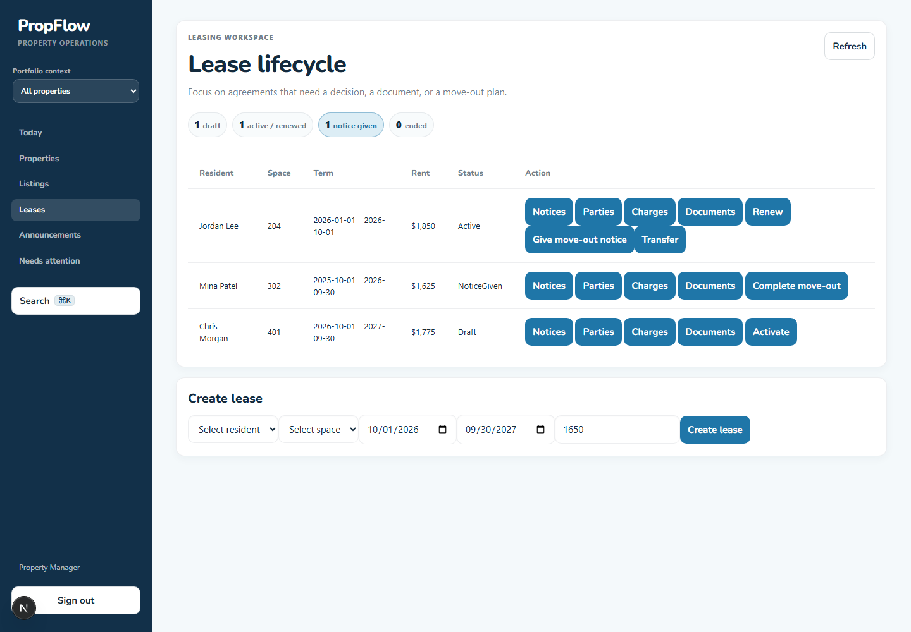
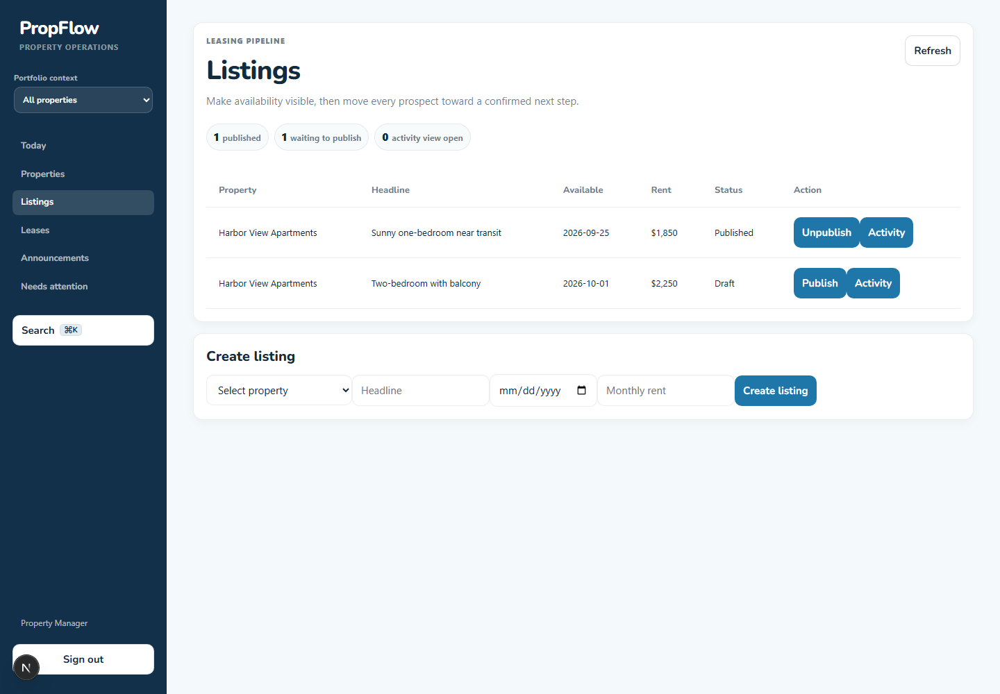
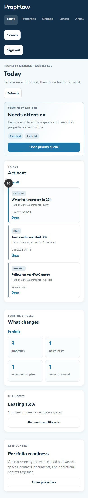

Today dashboard
../outputs/workstream-a/today-desktop.png demonstrates role-aware priority counts, a property-labelled next-action queue, ownership/urgency cues, and portfolio metrics that link into actionable workspaces.

Captured 2026-09-13 from the local Next development server at desktop (1440px) and mobile (390px) widths. The capture routes API calls to deterministic, representative property-manager data; no tenant records were created or changed.
../outputs/workstream-a/today-desktop.png demonstrates role-aware priority counts, a property-labelled next-action queue, ownership/urgency cues, and portfolio metrics that link into actionable workspaces.

../outputs/workstream-a/properties-desktop.png demonstrates portfolio context in the persistent shell, a portfolio summary, search, loading-aware refresh control, and a clear path into property detail.

../outputs/workstream-a/leases-desktop.png demonstrates lifecycle-stage counts, an explicit notice-given risk signal, and actions kept beside resident, unit, term, and status context.

../outputs/workstream-a/listings-desktop.png demonstrates published-versus-draft visibility and direct progression from availability to prospect activity.

../outputs/workstream-a/today-mobile.png demonstrates the responsive single-column completion flow: priority queue first, touch-sized actions, and no horizontal desktop-table dependency.
